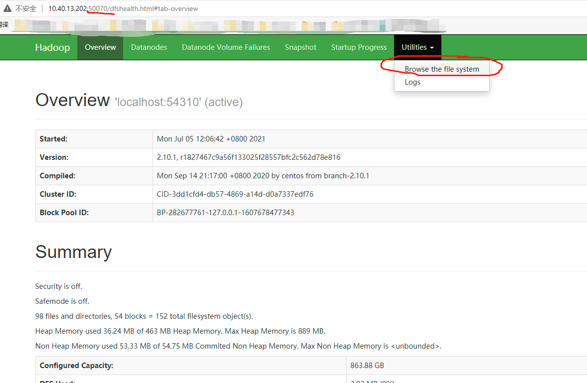

HDFS使用说明
Spark读取文件
Spark读取和存储文件时输入的文件路径实际上是文件对应的URI，所以直接输入文件路径读数据集有时候会遇到类似"file not found"报错，这是因为目前服务器启动了HDFS（Hadoop Distributed File System），是一个单独的文件系统，Spark对于未声明协议头的URI会优先在HDFS中寻找。
Spark读取本地文件
因此对于本地文件，需要在路径前加入file://协议头来向spark说明这是一个本地文件，比如读取用户lzh的家目录/home/lzh下的WineData.csv数据集：
df = spark.read.format('com.databricks.spark.csv') \
.options(header='true', inferschema='true') \
.load("file:///home/lzh/WineData.csv",header=True)
注意"/"的个数，并且这里必须使用绝对路径，可以在命令行中使用pwd命令查看。
Spark自带的数据集的本地文件在/usr/local/spark/data中。
Spark读取HDFS文件
虽然你完全可以一直使用本地文件作为输入输出，但是毕竟我们学的是分布式存储与计算，HDFS是分布式存储中非常常用的一个文件系统，所以非常建议同学们尝试用Spark读入HDFS数据集，并练习使用HDFS，这其实很简单，只需要把URI的协议头改成hdfs://即可，如下读取hdfs的/Data目录下的WineData.csv：
df = spark.read.format('com.databricks.spark.csv') \
.options(header='true', inferschema='true') \
.load("hdfs:///Data/WineData.csv",header=True)
HDFS是什么
HDFS（Hadoop Distributed File System），作为Google File System（GFS）的实现，是Hadoop项目的核心子项目，是分布式计算中数据存储管理的基础，是基于流数据模式访问和处理超大文件的需求而开发的，可以运行于廉价的商用服务器上。它所具有的高容错、高可靠性、高可扩展性、高获得性、高吞吐率等特征为海量数据提供了不怕故障的存储，为超大数据集（Large Data Set）的应用处理带来了很多便利。（来源：https://www.jianshu.com/p/f1e785fffd4d）
总的来说，就是专门为分布式系统设计的文件系统，是运行在Hadoop上的。你可能又会问：Hadoop是什么？这里我们不做更多赘述，你可以理解为一个分布式系统的基础框架，包括文件系统HDFS，进程调度管理Yarn，可以作为Spark的底层运行环境之一（如果你尝试自己安装Spark就会发现在官网下载安装包时会提示你选择hadoop的版本）。
HDFS入门
用于HDFS是单独的文件系统，所以里面有什么文件在JupyterHub没法直接展示，但是我们可以通过命令行或者HDFS的web界面查看，这样才知道数据集在哪儿怎么读。
最简单的方式：webUI
访问http://10.40.13.202:50070/即可访问hdfs的管理节点（namenode），选择Utilities中的Browse the file system即可查看 
使用hdfs dfs命令
web界面虽然直观，但在做批量文件操作时非常不方便，所以建议在JupyterHub的Terminal中使用hdfs dfs系列命令访问。作为初学者，我们先了解hdfs的增删改查就够了。
HDFS 命令行的统一格式如下。
hdfs dfs -cmd <args>
其中，cmd是具体的文件操作命令，
添加和查看目录
创建文件夹
hdfs dfs -mkdir -p /usr/root
查看目录中的文件(-ls后添加-R选项可以递归查看)
hdfs dfs -ls /
本地文件系统与HDFS的数据传输
使用-copyFromlocal将本地文件上传到 HDFS。
hdfs dfs -copyFromLocal 本地文件路径 HDFS文件路径
下载文件是指从 HDFS 中获取文件，可以使用hdfs dfs -copyToLocal命令。
hdfs dfs -copyToLocal HDFS文件路径 本地文件路径
删除文件和目录
删除某个文件
hdfs dfs -rm README.txt
删除目录中所有文件
hdfs dfs -rm -r dir
检索文件
使用cat命令
hdfs dfs -cat README.txt
tail命令可以只显示文件的末尾
hdfs dfs -tail README.txt
查阅帮助
查阅HDFS命令帮助，可以更好地了解和使用HDFS的命令。用户可以执行hdfs dfs来获取所用版本HDFS的一个完整命令类别，也可以使用help来显示某个具体命令的用法及简短描述。例如，要了解ls命令，可执行以下命令。
hdfs dfs -help ls
修改文件
看到这里你可能会发现，为什么没有文件的修改命令？因为HDFS为考虑系统的可靠性和大数据“一次写，大量读”的场景，不支持文件的修改操作，文件一旦上传则是只读的，如果想修改它，必须删除之后创建新的文件。
参考文献
如果相对HDFS和hadoop有更多了解，建议同学们阅读如下链接
https://hadoop.apache.org/docs/r1.2.1/hdfs_design.html
https://www.w3cschool.cn/hadoop/
HDFS命令大全https://blog.csdn.net/m0_38003171/article/details/79086780